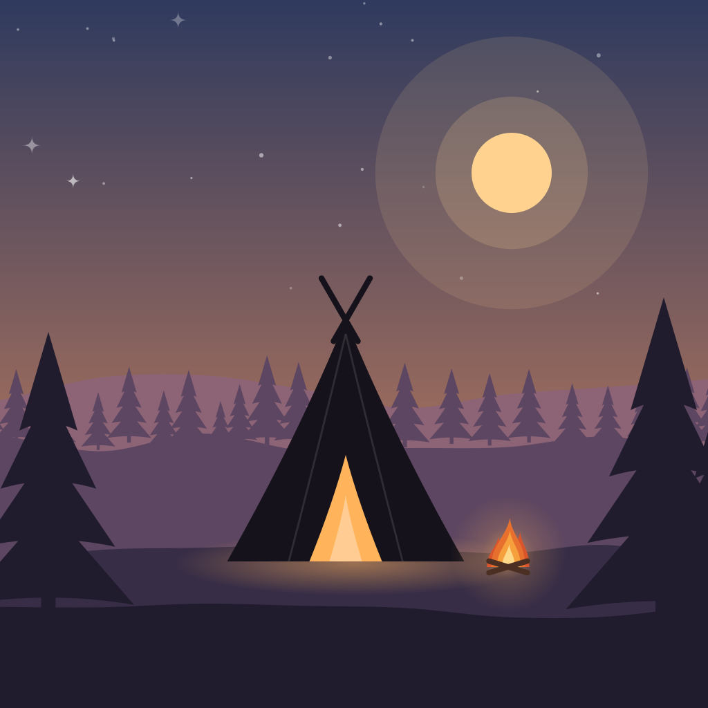
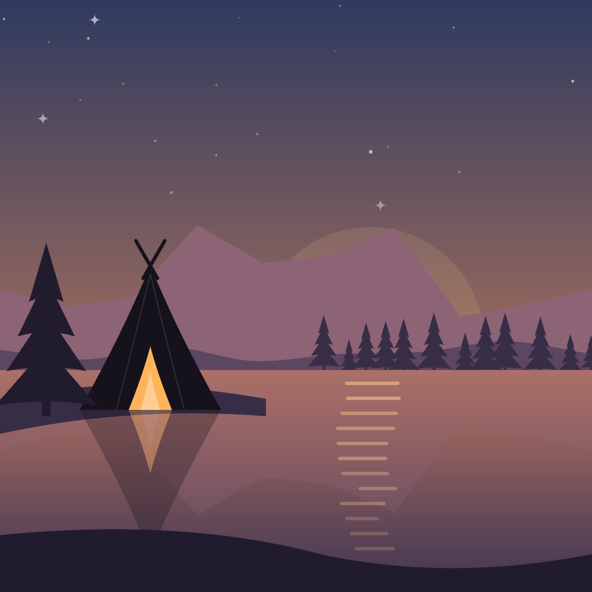
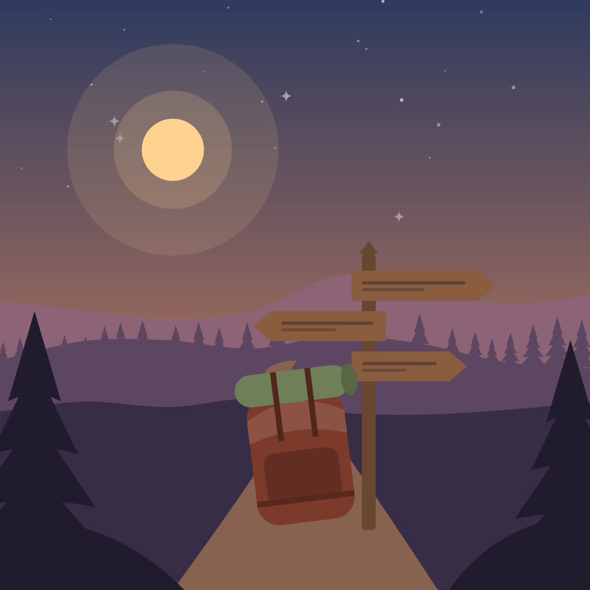

Entwürfe für App-Icons, Badges, Hintergründe und Farbpaletten. Tippe an, was dir gefällt; die Auswahl bleibt im Browser gespeichert und lässt sich unten als Liste kopieren.



App-Icon-Pakete
Vier Pakete. Wer ein Paket kauft, bekommt Morgen, Abend und Nacht und wählt selbst, welche Variante auf dem Homescreen erscheint. Groß mit iOS-Maske, daneben Android-Kreis und Homescreen-Größe.
Nachtlager
Lagerfeuer
Kohte am See
Hajk am Wegweiser
iOS 27: finale Icons
Gerendert mit Icon Composer (Liquid Glass, Design-Generation 27). Jede Szene besteht aus drei Ebenen, damit Glas, Schatten und die getönte bzw. klare Darstellung Tiefe bekommen. Unter iOS enthält jedes Paket zusätzlich „Automatisch“: im hellen Modus der Morgen, im Dunkelmodus die Nacht. Der Wechsel passiert durch das System, ohne Hinweis und auch bei geschlossener App.
NachtlagerMorgen
HellDunkelGetöntKlar
NachtlagerAbend
HellDunkelGetöntKlar
NachtlagerNacht
HellDunkelGetöntKlar
NachtlagerAutomatisch
HellDunkelGetöntKlar
LagerfeuerMorgen
HellDunkelGetöntKlar
LagerfeuerAbend
HellDunkelGetöntKlar
LagerfeuerNacht
HellDunkelGetöntKlar
LagerfeuerAutomatisch
HellDunkelGetöntKlar
KohteSeeMorgen
HellDunkelGetöntKlar
KohteSeeAbend
HellDunkelGetöntKlar
KohteSeeNacht
HellDunkelGetöntKlar
KohteSeeAutomatisch
HellDunkelGetöntKlar
HajkMorgen
HellDunkelGetöntKlar
HajkAbend
HellDunkelGetöntKlar
HajkNacht
HellDunkelGetöntKlar
HajkAutomatisch
HellDunkelGetöntKlar
Supporter-Badges
Ein einfaches Badge in allen Stufenfarben und ein besonderes Förderer-Badge.
Du hältst uns auf Kurs
Lena HoffmannFahrtenname: LuchsJonas Wegner12. März 2011Mia SchröderMitgliedsnummer 482 113Tim AlbersFahrtenname: Specht
Animierte Hintergründe
Für den Kopf der Mitgliederliste. Alle Bewegungen sind langsam und stehen still, wenn „Bewegung reduzieren“ aktiv ist. Hell zeigt die Tagesszene, Dunkel die Nachtszene; umschalten kannst du oben.
Farbpaletten
Gleiche Tokens wie die heutigen DPSGColors, damit der Umbau in theme.dart überschaubar bleibt. Unter jeder Palette steht der Kontrast gegen die Kartenfläche; 4,5 : 1 ist das Minimum für Fließtext.